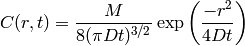
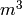
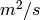
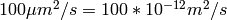

This chapter introduces how to model and simulate diffusion systems. First we will look at how to describe the diffusive motion of molecules by using object of Diff class available in steps.model, then how to import a tetrahedral mesh by using the steps.utilities.meshio methods and finally how to create a steps.solver.Tetexact object to be used for the simulation itself. The Tetexact solver builds on the Wmdirect solver (we have used up until now) extended for diffusive fluxes between tetrahedral elements in a mesh. Each individual tetrahedron behaves like a well-mixed compartment where reactions can take place. Diffusive flux between tetrahedral elements is represented by a series of first-order reactions with rate constants derived from the local geometry and the diffusion constant parameter. Thus, this solver object can be used to simulate full reaction-diffusion systems in complex geometries, but in this introduction we will start with a simple diffusion system.
We wish to simulate diffusion of one molecular species from a point source in an infinite volume, a problem chosen for simplicity and with a known analytical solution we can compare to our STEPS simulation results. As the volume in STEPS must of course be finite we will create a large spherical mesh, inject our molecules into the central tetrahedron (as there is no concept of a point source in STEPS) and compare our results to the analytical solution up to a time when there are zero or an insignificant number of boundary events.
To compare our mean results in STEPS to an analytical solution we must solve the diffusion equation for one spatial dimension, the radial distance from the point source. The problem is simplified to one dimension because the symmetry of the problem dictates that the concentration at any given radial distance r from the point source will be equal at all points in space forming a two-dimensional “shell” at that r.
If all molecules exist at a single point at time 0, within an infinite boundary, the analytical solution is (see Crank, J. (1975) The Mathematics of Diffusion. Oxford: Clarendon Press):
(1)
where C is the concentration (in units of number of molecules/ ) at radial distance r from source at time t, M is the total number of injected molecules and D is the diffusion constant (in units ) .
To set up our model and run our simulation we will create a Python script, organising the script according to a certain template chosen for a good organisation of our workflow. However, for clarity, in these examples we will show the code as if it was typed at the Python prompt. As in previous chapters we will go through the code step by step and look at the statements in detail as we go.
The first thing to do is to write statements to import all our steps packages with all the methods available to describe our model and run our simulation. We will also import other packages we require at this point in the script, such as math, numpy, pylab and random. We will make use of the random package to help with selecting tetrahedrons from our mesh to sample (which we look at in detail later) and math contains many useful basic mathematical functions useful for finding the analytical solution:
>>> import math
>>> import numpy
>>> import pylab
>>> import random
>>>
>>> import steps.model as smodel
>>> import steps.solver as solvmod
>>> import steps.tetgen as stetgen
>>> import steps.geom as stetmesh
>>> import steps.rng as srng
Now we set some parameters for our simulation. By keeping these variables grouped together at the beginning of a Python script we would make it easy to locate and change these simulation parameters if we wished to:
>>> # The number of iterations to run
>>> NITER = 10
>>>
>>> # The data collection time increment
>>> DT = 0.001
>>>
>>> # The simulation endtime
>>> INT = 0.2
>>>
>>> # The number of molecules to be injected
>>> NINJECT = 100000
>>>
>>> # The number of tetrahedral elements to sample data from.
>>> SAMPLE = 2000
>>>
>>> # The diffusion constant for our diffusing species
>>> DCST = 20.0e-12
At what stage these constants will be used will become clear as we work through the code.
We want to sample data from individual tetrahedrons so we can analyse spatial data, so we now create two objects to store the indices [1] and radial distance from center of the mesh tetrahedrons we will sample. We have decided in this case that we don’t want to save data for every single tetrahedron, but rather randomly randomly select 2000 tetrahedrons by setting the SAMPLE variable to 2000. We will look at how we select which tetrahedrons to sample in Geometry specification , but for now we just create numpy arrays initialized to zeros. The reason for creating these arrays at this point in the script will become clear later:
>>> # Array to hold tetrahedron indices (integers)
>>> tetidxs = numpy.zeros(SAMPLE, dtype = 'int')
>>>
>>> # Array to hold tetrahedron radial distances (floats)
>>> tetrads = numpy.zeros(SAMPLE)
So we now move on to our model description. This time we will organise the code into a function, which will return the steps.model.Model object we create. It is entirely up to you if you wish to organise your model description in this way, but it can be useful for larger models. [2] This is our first function definition, so lets mention a little about the syntax for defining functions in Python. Firstly, we use the def statement to create a function object and assign it a name. Then we must provide all our function code with the same indentation. As soon as our indentation returns to the indentation for the def statement, we exit the function definition. We wish to return our steps.model.Model object, so we will provide a return statement at the end of the function. First we create our function and name it gen_model. In this simple example the function will not require any arguments:
>>> def gen_model():
Next, as always, we create our class:steps.model.Model container object. As this is part of our function body, we must indent. We chose a tab:
mdl = smodel.Model()
Now we create our molecular species (only one in this simple model) and our volume system, much as before:
A = smodel.Spec('A', mdl)
vsys = smodel.Volsys('cytosolv', mdl)
Now we create our diffusion rule. In STEPS this means creating a steps.model.Diff object and assigning it to a volume system. As well as the usual identifier string and a reference to the parent volume system, a required parameter for the object construction is a reference to the molecular species object to which this diffusion rule applies. An optional parameter to the object constructor is the diffusion constant, which is given in s.i. units (i.e. so for example a diffusion constant of ). This default value for the diffusion constant can be changed with object method setDcst and can even be changed from the default value during simulation, much like the reaction constants we looked at in previous chapters. However, in this model we will not alter the diffusion constant later in the script, so this is the value that will be used during our simulation. Recall we defined the diffusion constant at the beginning or our script, the reason for which is that this variable is available when we come to finding the analytical solution:
diff_A = smodel.Diff('diff_A', vsys, A, dcst = DCST)
Finally, we return the steps.model.Model object, which holds all the information we have defined about the chemical species and their associated reaction and diffusion rules that is required by our solver object:
return mdl
So our complete function is:
>>> def gen_model():
mdl = smodel.Model()
A = smodel.Spec('A', mdl)
vsys = smodel.Volsys('cytosolv', mdl)
diff_A = smodel.Diff('diff_A', vsys, A, dcst = DCST)
return mdl
>>>
We see here one of the reasons we require the identifier strings: the object references are not available at later parts in the script because they are in the function body and are not returned to the caller, and therefore the identifier string is the only way we can refer to objects such as the Spec and Diff objects later on, which we will see during our simulation.
We now move on to describing our geometry. This is the section that stands out as very different to our previous well-mixed geometry description. The methods we provide for describing mesh-based geometry in STEPS give tools for importing meshes from some powerful mesh-generation packages, and methods for initialising and controlling your simulation conditions which are beyond the ground covered in this chapter. It is likely that you will only start to get the feel of how to use these methods to achieve your required description in more complex models with hands-on experience. This chapter begins to introduce some useful methods for mesh manipulation and it is hoped that this will give the user enough experience with the workflow to be able to go on to more advanced object manipulation that may be required for more complex models. A full list of tetrahedral mesh methods is available in API References. Firstly, we chose to structure all our geometry code into a function, much like our model description:
>>> def gen_geom():
We now load our mesh object. STEPS provides all mesh loading and saving tools in module steps.utilities.meshio. This module currently provides support for TetGen (http://tetgen.berlios.de/), CUBIT (http://cubit.sandia.gov/) and NETGEN (http://www.hpfem.jku.at/netgen/) mesh generators, along with other any others which support the Abaqus output format. The details of creating a mesh from these 3rd party packages and importing into STEPS are beyond the scope of this chapter, however we provide a full list of meshio methods in API References. One of the functions provided in meshio is saveMesh, which allows the user to save the imported mesh in STEPS format. This is important because the information passed on from the mesh generators is often only very basic information about the mesh and STEPS must find a vast amount of information to pass on to the Tetexact reaction-diffusion solver object internally. This can be time-consuming for large meshes, however this process only needs to be performed once. With saveMesh the mesh is saved with basic information in an XML file, with an accompanying ASCII file containing all the extra information STEPS computed when importing the mesh. After these files have been created, the mesh can then be imported with the loadMesh method, which will only take a few seconds or minutes to load even very large meshes. Therefore, it is highly recommended that all meshes are saved in this way by using the meshio.saveMesh function. For this example we assume that we have mesh files sphere_1e-06.xml and sphere_10e-6.txt available in the current working directory, which we created previously with saveMesh from a mesh we imported from a mesh-generator with the importAbaqus function. We import the meshio module here for clarity, of course indenting because this is part of the function body:
import steps.utilities.meshio as meshio
mesh = meshio.loadMesh('sphere_10e-6')[0]
Our tetrahedral mesh geometry object is very different from our well-mixed geometry (steps.geom.Geom) object. The mesh geometry is described by a steps.geom.Tetmesh object, which contains all the functionality of a steps.geom.Geom object, extended with many more methods which only make sense for a tetrahedral mesh. A steps.geom.Tetmesh object is created in loadMesh and returned to the caller, so in the above code the object is referenced by variable mesh. We will be introduced to some of the Tetmesh methods as we find our sample tetrahedrons, but first we must create our mesh compartments. A compartment object in a mesh is of type steps.geom.TmComp and requires a little extra information than a well-mixed compartment. A tetrahedral-mesh compartment is comprised of a group of tetrahedrons, so we must supply the object constructor with the indices of the enclosed tetrahedrons in a Python sequence (e.g. a list). A mesh can be separated into as many compartments as the user wishes, though compartments should be separated physically by a boundary (i.e. by a membrane) as there is no implicit diffusion between compartments in STEPS, even if they border each other. If a user wishes to modify behaviour for certain sections of a compartment, this can be achieved by grouping tetrahedrons together and utilising the simulation methods, all achievable in the Python interface (see steps.solver for all available methods). However, for our example we only wish to have one compartment, and for that compartment to enclose the entire mesh. So we use a steps.geom.Tetmesh object method to return the number of tetrahedrons in the mesh, and then pass a sequence of all the indices to the steps.geom.TmComp object constructor [3]:
# Find the total number of tetrahedrons in the mesh
ntets = mesh.countTets()
# Create a compartment containing all tetrahedrons
comp = stetmesh.TmComp('cyto', mesh, range(ntets))
comp.addVolsys('cytosolv')
Note that we do not (and indeed can not) set the volume of the compartment because the volume is calculated from the combined volume of the enclosed tetrahedrons. And that’s it for our geometry description. The remainder of our gen_geom function is used to collect, at random, the tetrahedrons to sample data from. This is introduced here because it is often undesirable to collect data from all tetrahedrons in large meshes and the user may wish to pick and chose certain tetrahedrons to sample. Such groups can be stored in a Python sequence with for loops used to loop over these groups and set simulation parameters or collect data. In this simple example we will just store the central tetrahedron and it’s 4 neighbours, then find the rest at random, making sure not to store the same tetrahedron more than once. We will store the sample tetrahedron indices in the tetidxs numpy array we created at the top of our script. Along the way we will be introduced to some new steps.geom.Tetmesh methods, which will be described as we go along. This section is intended to be only an introduction to finding information from the mesh, though a full list of the many Tetmesh methods that can be used for more complex tasks is available in API References. First, we use the findTetByPoint method to get the index of the tetrahedron in the centre of our mesh. findTetByPoint returns the tetrahedron by index that encompasses the location given in Cartesian coordinates (in a list). Returns -1 if the location given is not inside the mesh. The mesh is a sphere, radius 10 microns, centered on the origin, so the centre of the mesh is at 0.0, 0.0, 0.0 in Cartesian coordinates. We store the returned index in our tetidxs array:
# Fetch the central tetrahedron index and store:
ctetidx = mesh.findTetByPoint([0.0, 0.0, 0.0])
tetidxs[0] = ctetidx
Next we wish to make sure that we include data from around the central tetrahedron, so we find the central tetrahedron’s four neighbours. To do this we use method getTetTetNeighb, which returns any tetrahedron’s 4 neighbours by index in a tuple. If any neighbour index is returned as -1 this means that this face of the tetrahedron is on the boundary and therefore has no neighbour in that direction [4]. In this example it is safe to assume that the central tetrahedron is not on a surface and we will add our 4 neighbour indices to our tetidxs array:
# Find the central tetrahedron's four neighbours:
neighbs = mesh.getTetTetNeighb(ctetidx)
tetidxs[1],tetidxs[2],tetidxs[3],tetidxs[4] = neighbs
Now we fill the rest of our tetidxs array with tetrahedrons chosen at random. A way to do this would be to simply fetch one randomly-generated number between 0 and 1 and pick the nearest integer that it corresponds to when multiplied by the total number of tetrahedrons. However, the following technique is a different approach and finds a random point in space in the 3D bounding box of the mesh and stores the corresponding tetrahedron index if it not already stored (and the point is not outside the mesh). This would then make it easier to provide a bias towards the center of the mesh in order to get a more even distribution of radial distances, but this is not shown in this simple example. We will use methods getBoundMax and getBoundMin, which return the maximum and minimum Cartesian coordinates of the mesh respectively:
# Keep track how many tet indices we have stored so far
stored = 5
# Run a loop until we have stored all tet indices we require
while (stored < SAMPLE):
# Find the maximum and minimum coordinates of the mesh
max = mesh.getBoundMax()
min = mesh.getBoundMin()
# Fetch 3 random numbers between 0 and 1:
rnx = random.random()
rny = random.random()
rnz = random.random()
# Find the related coordinates in the mesh:
xcrd = min[0] + (max[0]-min[0])*rnx
ycrd = min[1] + (max[1]-min[1])*rny
zcrd = min[2] + (max[2]-min[2])*rnz
# Find the tetrahedron that encompasses this point:
tidx = mesh.findTetByPoint([xcrd, ycrd, zcrd])
# -1 was returned if point is outside the mesh:
if (tidx == -1): continue
if (tidx not in tetidxs):
tetidxs[stored] = tidx
stored += 1
This example is intended to demonstrate that there is a lot of functionality in STEPS to enable you to find and store whatever spatial information is required that could not be passed on from the mesh generator, and that some knowledge of Python is very useful at this stage to enable you to produce code to get maximum benefit from the available methods. This geometry description stage is a good time to find and collect whatever spatial information is required for simulation initialization and data collection. We should note that in this example there is little error checking and more should be included in real simulation scripts (for example SAMPLE must be lower than the total number of tetrahedrons in the mesh). For a full list of the available steps.geom.Tetmesh methods please see steps.geom. Now, the final task we wish to perform at the geometry level is to find the radial distances of the tetrahedrons and fill our tetrads array with this information. These are stored separately in our example (for clarity) in the numpy array tetrads, and we must make sure that the distances saved relate to the distance for the tetrahedron at the same location in the tetidxs array, although we could easily have stored the indices and radial distances together in a 2D array. We will take the radial distance as the distance from the tetrahedron’s barycenter to the barycenter of the central tetrahedron. To find the barycenters we use method getTetBarycenter, which returns the barycenter Cartesian coordinates in a tuple:
# Find the barycenter of the central tetrahedron
cbaryc = mesh.getTetBarycenter(ctetidx)
for i in range(SAMPLE):
# Fetch the barycenter of the tetrahedron:
baryc = mesh.getTetBarycenter(tetidxs[i])
# Find the radial distance of this tetrahedron:
r = math.sqrt(math.pow((baryc[0]-cbaryc[0]),2) \
+ math.pow((baryc[1]-cbaryc[1]),2) \
+ math.pow((baryc[2]-cbaryc[2]),2))
# Store the radial distance (in microns):
tetrads[i] = r*1.0e6
Finally, we return the steps.geom.Tetmesh object required for simulation object construction:
return mesh
Our complete gen_geom function is then:
>>> def gen_geom():
import steps.utilities.meshio as meshio
mesh = meshio.loadMesh('sphere_10e-6')[0]
# Find the total number of tetrahedrons in the mesh
ntets = mesh.countTets()
# Create a compartment object containing all tetrahedrons
comp = stetmesh.TmComp('cyto', mesh, range(ntets))
comp.addVolsys('cytosolv')
# Fetch the central tetrahedron index and store:
ctetidx = mesh.findTetByPoint([0.0, 0.0, 0.0])
tetidxs[0] = ctetidx
# Find the central tetrahedron's four neighbours:
neighbidcs = mesh.getTetTetNeighb(ctetidx)
tetidxs[1], tetidxs[2], tetidxs[3], tetidxs[4] = neighbidcs
# Keep track how many tetrahedron we have stored so far
stored = 5
# Run a loop until we have stored as many indices as we require
while (stored < SAMPLE):
# Find the maximum and minimum coordinates of the mesh
max = mesh.getBoundMax()
min = mesh.getBoundMin()
# Fetch 3 random numbers between 0 and 1:
rnx = random.random()
rny = random.random()
rnz = random.random()
# Find the related coordinates in the mesh:
xcrd = min[0] + (max[0]-min[0])*rnx
ycrd = min[1] + (max[1]-min[1])*rny
zcrd = min[2] + (max[2]-min[2])*rnz
# Find the tetrahedron that encompasses this point:
tidx = mesh.findTetByPoint([xcrd, ycrd, zcrd])
# -1 was returned if point is outside the mesh:
if (tidx == -1): continue
if (tidx not in tetidxs):
tetidxs[stored] = tidx
stored += 1
# Find the barycenter of the central tetrahedron
cbaryc = mesh.getTetBarycenter(ctetidx)
for i in range(SAMPLE):
# Fetch the barycenter of the tetrahedron:
baryc = mesh.getTetBarycenter(tetidxs[i])
# Find the radial distance of this tetrahedron:
r = math.sqrt(math.pow((baryc[0]-cbaryc[0]),2) \
+ math.pow((baryc[1]-cbaryc[1]),2) \
+ math.pow((baryc[2]-cbaryc[2]),2))
# Store the radial distance (in microns):
tetrads[i] = r*1.0e6
return mesh
>>>
Now it’s time to run a simulation and visualize the collected data, much as we did in previous chapters. This time we must call the gen_model and gen_geom functions to set up our model and return the container objects. We then create our random number generator object just as for the Wmdirect simulations:
>>> model = gen_model()
>>> tmgeom = gen_geom()
>>>
>>> rng = srng.create('mt19937', 512)
>>> rng.initialize(2903)
Now we can create our reaction-diffusion steps.solver.Tetexact solver object, which requires a steps.geom.Tetmesh object to it’s initializing function (if we try to present it with simple well-mixed geometry an error message will appear):
>>> sim = solvmod.Tetexact(model, tmgeom, rng)
This solver builds on the functionality of the well-mixed solvers, with methods for manipulating certain regions in the mesh. We will see some examples in the following snippets of code, and a full list of available methods is available in steps.solver. Similarly to our well-mixed simulations we must create the data structures for saving our results. We create the ‘time points’ array (based on parameters we set at the beginning of our script) and the ‘results’ array, which in this case will store data for all the tetrahedrons we are sampling:
>>> tpnts = numpy.arange(0.0, INT, DT)
>>> # Find how many 'time points' we have
>>> ntpnts = tpnts.shape[0]
>>>
>>> res = numpy.zeros((NITER, ntpnts, SAMPLE))
We are now ready to run a simulation. This will look quite similar to our previous code for running a well-mixed simulation, but this time we are injecting molecules into and recording data from individual tetrahedrons, not the whole compartment (though this is also possible). We first need to find the central tetrahedron index again (as we did not pass this information on from the gen_geom function, though this is of course an option). We then use solver method setTetCount to set the number of molecules in the central tetrahedron at time t = 0 to the number stored in variable NINJECT (default number in all tetrahedrons is zero set by the reset method). We will then run our simulation and collect the data in a few lines of code in nested for loops:
>>> # Fetch the index of the tetrahedron at the centre of the mesh
>>> ctetidx = geom.findTetByPoint([0.0, 0.0, 0.0])
>>>
>>> # Run NITER number of iterations:
>>> for i in xrange(NITER):
sim.reset()
# Inject all molecules into the central tet:
sim.setTetCount(ctetidx, 'A', NINJECT)
for j in xrange(ntpnts):
sim.run(tpnts[j])
# Loop over the tetrahedrons we are saving data for
for k in xrange(SAMPLE):
# Save the concentration in the tetrahedron, in uM
res[i,j,k] = sim.getTetConc(tetidxs[k], 'A')*1.0e6
>>>
That is all the code we require to run our simple diffusion simulation. We wish to look at the mean concentration in the tetrahedrons over all our iterations, so we simply use the numpy.mean function as in previous chapters:
>>> res_mean = numpy.mean(res, axis = 0)
So now we come to plotting our data. Now that we have spatial information the data we wish to plot is different to our previous well-mixed simulations where we were plotting the concentration in a well-mixed compartment. We will plot the mean concentration from individual tetrahedrons against their radial distance from origin, but at many different time points. To achieve this we will create another function, this time with a parameter relating to the ‘time point’ we wish to plot. We can then call this function with a ‘time point’ argument and our function will plot concentration v radial distance at the time relating to that ‘time point’, as desired. In our function we also label the axis and title the plot with the time:
>>> def plotres(tidx):
# Check the time index is in range
if (tidx >= INT/DT):
print 'Time index is out of range.'
return
pylab.scatter(tetrads, res_mean[tidx])
# Set our plotting x and y bounds
pylab.xlim(0,0, 10.0)
pylab.ylim(0.0)
# Label the axes
pylab.xlabel('Radial distance ($\mu$m)')
pylab.ylabel('Concentration ($\mu$M)')
t = tpnts[tidx]
pylab.title('Unbound diffusion. Time: ' + str(t) + 's')
plotanlyt(t)
pylab.show()
>>>
You may have noticed that we call a function that we have not defined yet, plotanlyt. This function will plot the concentration from the analytical concentration given by equation (1). The function for plotting the analytical solution is provided here, but we will not go through this code in detail. Here we can see why the diffusion constant was stored in variable DCST at the top of our script:
>>> def plotanlyt(t):
segs = 100
anlytconc = numpy.zeros((segs))
radialds = numpy.zeros((segs))
maxrad = 0.0
for i in tetrads:
if (i > maxrad): maxrad = i
maxrad *= 1e-6
intervals = maxrad/segs
rad = 0.0
for i in range((segs)):
# Find the analytical concentration, and convert to mol/L
anlytconc[i]=1.0e3*(1/6.022e23)*\
((NINJECT/(math.pow((4*math.pi*DCST*t),1.5)))*\
(math.exp((-1.0*(rad*rad))/(4*DCST*t))))
radialds[i] = rad*1e6
rad += intervals
pylab.plot(radialds, anlytconc, color = 'red')
>>>
And that is everything we need to set up and run our simple diffusion simulation and plot the data, alongside the analytical solution for comparison. With this structure, it is intended that the plotting functions is called interactively, giving us the chance to visualise a number of different time plots, then save whichever plots we chose. It often makes sense to output the data to a file, then write plotting functions in separate modules that can load the saved data from these files and plot. This requires some knowledge of writing and reading files in Python, but like most operations in Python, can usually be picked up quite quickly. Let’s assume we have contained all of our unbound diffusion code from this chapter in a Python file diff_unb.py. We can then run our simulation interactively in Python by importing the module, then visualising the data with the plotres function we defined. For this example lets provide a call to our plotres function with argument 199 meaning we will plot data at ‘timepoint’ 199 (corresponding to time 0.199s), our last time point:
>>> import diff_unb
>>> diff_unb.plotres(199)
Example output from such a call is shown in Figure 4.1:
The mean concentration of diffusing species ‘A’ in individual tetrahedrons in STEPS (black dots) is plotted with the analytical solution from equation (1) (red). The discrepancy at small radial distances is due to the injection of molecules into a finite volume in STEPS whereas a point source assumed for the analytical solution.
Footnotes
| [1] | Tetrahedrons are identified by an integer index (as are nodes and triangles). We will look at this in more detail in the geometry section. |
| [2] | In this way, for example, multiple model descriptions can be defined in a separate module with each description clearly separated inside functions. You can then import whichever model description objects you chose into the simulation scripts. We will not explore this topic in detail here, but it is a good idea to keep in mind that this organisation is an option. |
| [3] | Tetrahedron indices in STEPS all ways begin at 0 and increment by 1, regardless of their indices in the mesh-generation software. So if a mesh has n tetrahedrons, the Python function range(n) will return a sequence [0, 1, ..., n-1] i.e. a complete list of the tetrahedrons in the mesh. |
| [4] | This property can be very useful if you wish to find information about border tetrahedrons or surface triangles. |